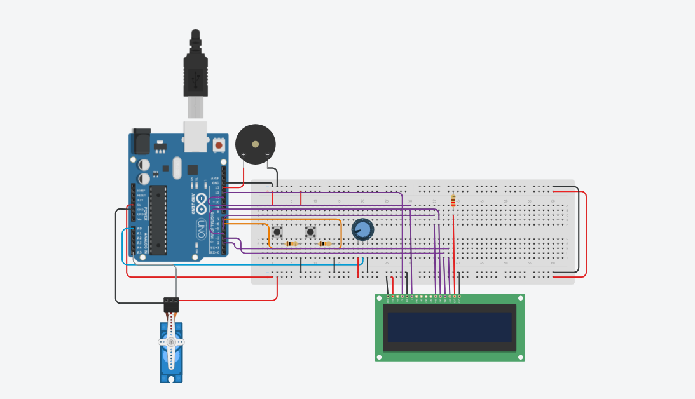
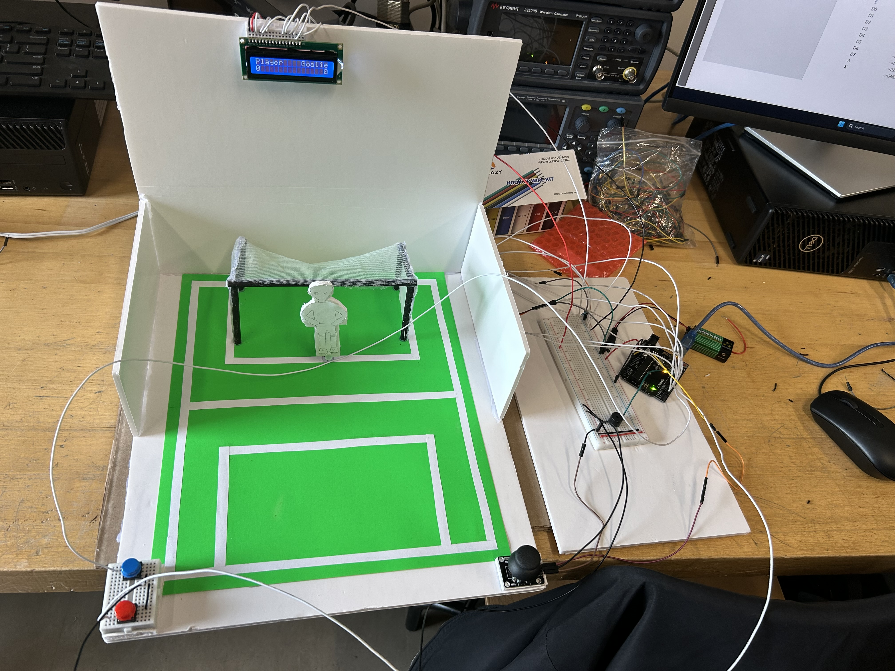

Course: TECH 117 (Computer Engineering Technology, Winter 2026)
Instructor: Ph.D. Ana Rodrigues
Team Members:
When designing our project, we decided to focus on goal 10 “Reduce inequality within and among countries” from the 17 goals listed by the United Nations’ “The Sustainable Development Goals”. Our project is designed to solve a problem where individuals may want to play soccer however are unable to, due to physical or environmental limitations. For our project we will be creating a simulation of a two player penalty shot game as seen in Maitse's "Arduino Goalkeeper Project.”
The main portion of the project will initially use a Breadboard and attach an Arduino Uno, KY-023 Joystick module, and a Servo Motor. Player 1 will control the joystick, moving it left and right. The arduino will then convert these inputs into movement for the servo motor, thus moving the goalie into a position that hopefully stops Player 2’s shot on net.
In addition to our main project, we designed two extensions which would add more depth to our simulation. To complete these extensions we expanded our part’s list by adding a Breadboard-Mini, Liquid Crystal Display (LCD),Buzzer, and Push Buttons.
Similarly to a real life soccer game we wanted to have a medium to display the current score of the game and signify the end of the game. We attached two push buttons, one to add one point to “Player” and one to add one point to “Goalie”. To turn these inputs into something the players can see, we used a LCD to display the score for both the Player 2 shooting labeled “Player” and Player 1 labeled as “Goalie”. Finally, to announce the end of the game we attached a buzzer to the circuit. Our group adjusted our code to activate the buzzer when one player reaches five points, while displaying which player won the game.
Combining all of these concepts, we created an interactive penalty shot simulator that tracks points for each player and announces the end of the game when one player wins. If everything works as planned then the desired simulation will function as follows; Player 2 will flick the ball using their finger, then using the joystick Player 1 will control the goalie moving it side to side to stop the ball from entering the net, depending on the outcome of the shot one player will have 1 point added to their total score using the designated push button, the input of the push button would then be displayed on the LCD, lastly when the score limit of five is reached by either player the buzzer will active and the LCD will display the player who won, signifying the end of the game.
There are some possible problems that we were worried may arise when constructing our project. The most pressing issue is setting up a reasonable delay for the input of the servo motor. Having the delay too short would allow Player 1 to rapidly move the goalie back and forth so quickly that it makes it nearly impossible for Player 2 to score. On the other hand, if the delay for the servo motor is too long it would give Player 2 an unfair advantage due to delayed reaction time of the goalie. To fix this problem our group has run multiple tests, increasing and decreasing the delay between input and servo motor movement to maximize fairness for both players.
Furthermore, another possible issue we were cautious of was having a faulty goalie design where the servo motor wouldn’t be able to support the weight of the goalie or a goalie that wouldn’t withstand the impact of the ball. If the goalie failed in either of these scenarios, it would result in a catastrophic failure because without the goalie, Player 1 is unable to save the shot. In order to resolve this issue, we first opted to use a lighter bristol board, giving the goalie a rigid base needed to stop the ball from entering the net without being so heavy that it would inhibit the servo motor's movement.
Finally, an issue we were mindful of was having a messy breadboard making it hard to use the push buttons without disconnecting the wires plugged into the breadboard. To remedy this issue we chose to separate our push buttons from the rest of our project by using a breadboard-mini. Using this breadboard-mini we are able to move the push buttons into a position that was easier to reach for the players while also having less wires in the way thus reducing the possibility the project would be ruined by someone accidentally unplugging a wire from the main breadboard.
Similarly to a real life soccer game we wanted to have a medium to display the current score of the game and signify the end of the game. We attached two push buttons, one to add one point to “Player” and one to add one point to “Goalie”. To turn these inputs into something the players can see, we used a LCD to display the score for both the Player 2 shooting labeled “Player” and Player 1 labeled as “Goalie”. Finally, to announce the end of the game we attached a buzzer to the circuit. Our group adjusted our code to activate the buzzer when one player reaches five points, while displaying which player won the game.

| Item | Qty | Unit Price | Subtotal | Source |
|---|---|---|---|---|
| Cardboard | 1 | $4.00 | $4.00 | Dollarama |
| Paper Strips | 1 | $0.02 | $0.02 | Staples |
| Green Paper Sheet | 1 | $0.30 | $0.30 | Dollarama |
| Straws | 5 | $0.30 | $0.90 | Dollarama |
| 220 Ω Resistors | 1 | $0.15 | $0.15 | Pishop |
| Breadboard | 1 | $4.95 | $4.95 | Adafruit |
| Breadboard Mini | 2 | $1.50 | $3.00 | Digikey |
| Arduino | 1 | $13.93 | $13.93 | Amazon |
| Jumper Wires | 1 set | $3.50 | $3.50 | SparkFun |
| Hot Glue Gun with Sticks | 1 set | $4.67 | $4.67 | Skip the Dishes |
| Servo Motor | 1 | $3.00 | $3.00 | Amazon |
| Joystick Module | 1 | $2.30 | $2.30 | Amazon |
| Small Ball | 1 | $0.25 | $0.25 | Dollarama |
| Printed Goalkeeper (Hardboard) | 1 | $0.25 | $0.25 | Dollarama |
| Estimated Total | $43.22 | |||
The following image shows the assembled prototype on a breadboard attached to the field, joystick, motor, buttons, lcd, and buzzer.

The following Arduino code controls the system, displaying goal information on the 16x2 lcd, taking joystick input and rerouting it to the goalie motor, taking button input to increment the score, and activating the buzzer when a winner is decided.
// Suii Saver
// Author: Abdirahim Mohamed, Filip Lukic, Noah Sanci, Sumit Ganger
// March 16th 2026
#include <"Servo.h">
#include <"LiquidCrystal.h">
#include <"string.h">
Servo goalie; // Servo motor controlling the goalie
const int lcd_maxlen = 17; // 16 + 1 to ensure teh string is null terminated
const char lcd_header[] = "Player Goalie";
// lcd_score set to null as a safety precaution
char lcd_score[lcd_maxlen] = {"\0"};
const int goal_max = 5;
// ascii 0 character that we can add to get the character version of a number
// e.g ascii_0 + 7 = '7'
const int ascii_0 = 48;
int player_score = 0;
int goalie_score = 0;
const int variance = 90;
const int pos = variance; // initial goalie position indicating noon/ or directly vertical on a two dimensional plain/y-axis
//digital pins
const int player_pin = 6;
const int goalie_pin = 7;
const int motor_pin = 8;
LiquidCrystal lcd(12,11,5,4,3,2);
const int buzzer_pin = 13;
const int joystick_x = A0; /* analog to be able to get vector from motor*/
/* Need to alter what "pos" is above. ideally pos is set to be directly vertical but I don't know what that is right now */
const int max_motor_angle = pos+variance;
const int min_motor_angle = pos-variance;
/* function headers */
int set_goalie();
int set_lcd();
void set_score();
void buzzer();
void reset_game();
void setup() {
/* setup pins */
pinMode(joystick_x, INPUT); // setup joystick pin for input
pinMode(player_pin, INPUT_PULLUP); // setup player pin as a pullup input
pinMode(goalie_pin,INPUT_PULLUP); // setup goalie pin as a pullup input
pinMode(buzzer_pin, OUTPUT); // setup buzzer pin to be output
goalie.attach(motor_pin); // attach the goalie servo motor structure to the analog motor pin
// setup the 16x2 lcd
lcd.begin(16,2);
lcd.print(lcd_header); // print the default header to the screen
reset_game(); // ensure the scores are zero
set_score(); // update the score string with the 0-0 score
// ensure lcd_score is filled with spaces so the lcd displays nothing and
// null terminate the string
memset(lcd_score, ' ',17);
lcd_score[16]='\0';
Serial.begin(9600); // start the arduino
}
void loop() {
/* goalie_last and player_last are used to determine if a button has been pressed and to prevent
multiple goals in the same button press.*/
static int goalie_last = 1;
static int player_last = 1;
// set goalie's positoin based on joystick
int successful_set = set_goalie();
// get button input
int player_button = digitalRead(player_pin);
int goalie_button = digitalRead(goalie_pin);
/* if the player goal button is pressed and the button hasn't been pressed recently*/
if( !player_button && player_last == 0){
// update player score and flag the button as being pressed
player_score++;
player_last = 1;
}
// if the button is unpressed and is flagged as being pressed recently
else if (player_button&& player_last == 1){
// unflag the button as being pressed
player_last = 0;
}
/* if the goalie goal button is pressed and the button hasn't been pressed recently*/
if(!goalie_button && goalie_last == 0){
// update the goalie score and flag the button as being pressed
goalie_score++;
goalie_last = 1;
}
// if the button is unpressed and is flagged as being pressed recently
else if (goalie_button && goalie_last == 1){
// unflag the button as being pressed
goalie_last = 0;
}
// update the score string after potentially incrementing the score in the above if statements
set_score();
// Set the lcd and detect if there is a victor
int victor = set_lcd();
// if the player has won, signalled by a 1 from set_lcd()
if (victor == 1){
// update the lcd to indicate the player has won
lcd.setCursor(0,0);
lcd.print("Player win! ");
// sound the buzzer and delay
buzzer();
delay(2000); // delay for 2 seconds
reset_game(); // set both scores to zero
victor = 0; // signal there's no victor
}
// if the goalie has won, signalled by a 2 from set_lcd()
else if (victor == 2){
// update the lcd to indicate the goalie has won
lcd.setCursor(0,0);
lcd.print("Goalie win! ");
// sound the buzzer and delay
buzzer();
delay(2000); // delay for 2 seconds
reset_game(); // set both scores to 0
victor = 0; // signal there's no victor
}
}
int set_goalie(){
// get vector from joystick
int angle = analogRead(joystick_x);
// relativizes the angle to the motor position
angle = (( (float)angle / 1023) * (variance*2));
/* bound the angle by min and max angle */
// "if the angle is less than min_motor_angle then set angle to min_motor-angle, otherwise set angle to itself"
angle = angle < min_motor_angle ? min_motor_angle : angle;
// "if the angle is more than max_motor_angle then set angle to max_motor-angle, otherwise set angle to itself"
angle = angle > max_motor_angle ? max_motor_angle : angle;
/* tell the motor what angle it's supposed to be at */
goalie.write(angle);
}
int set_lcd(){
// set the cursor to the top row
lcd.setCursor(0,0);
// write the lcd header to the lcd
lcd.print(lcd_header);
// set the cursor to the bottom row
lcd.setCursor(0,1);
// write the score to the lcd
lcd.print(lcd_score);
// before settings score
if (goalie_score >= goal_max){
return 2; // 2 represents goalie victory
}
else if (player_score >= goal_max){
return 1; // 1 represents player victory
}
return 0; // 0 represents no victor yet
}
// change the string that set_lcd() displays to the lcd.
void set_score(){
lcd_score[0] = ascii_0 + player_score; // set first position to show player score
lcd_score[lcd_maxlen-2] = ascii_0 + goalie_score; // set last positoin to show goalie score
lcd_score[lcd_maxlen-1] = '\0';// null terminate no matter what
}
// resets the game's score to zero, the default loop() will quickly display it
void reset_game(){
goalie_score = 0;
player_score = 0;
}
/* sounds the buzzer for 1 second*/
void buzzer(){
/* play a short tune for the victor */
tone(buzzer_pin, 700, 1000);
delay(300);
tone(buzzer_pin, 900, 1000);
delay(300);
tone(buzzer_pin, 1100, 1000);
delay(500);
// stop the tune
noTone(buzzer_pin);
}
The Suii Saver effectively simulates a soccer penalty shot using parts you can find in an Arduino kit. Due to the modularity of the project it can be affordable or more in depth based on one’s needs. It is both educational and sustainable due to fact that it uses most major reusable components in an Arduino kit.